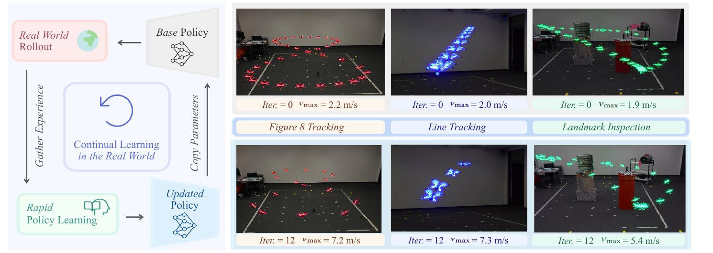
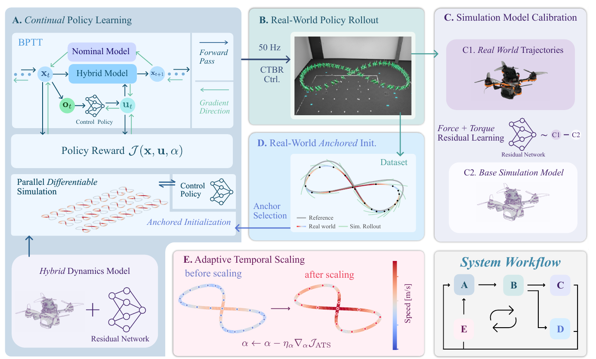
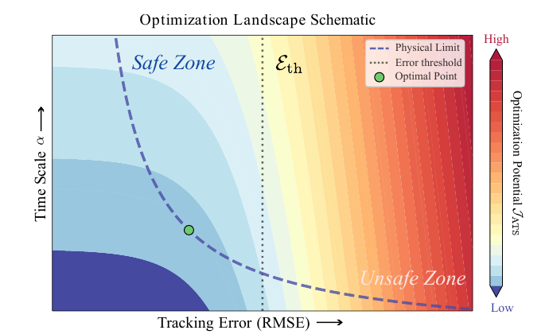
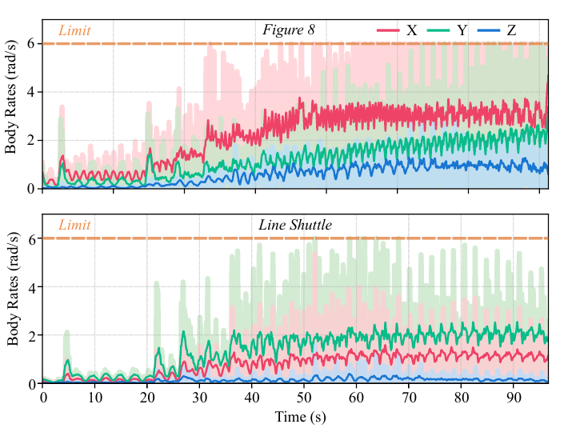
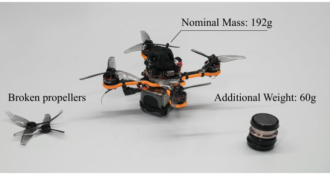
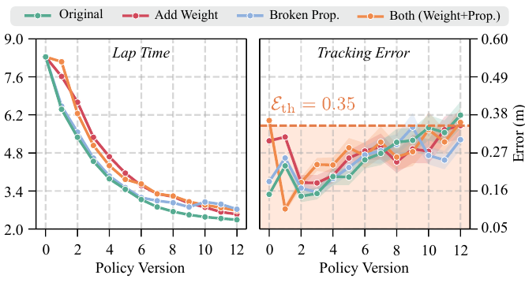
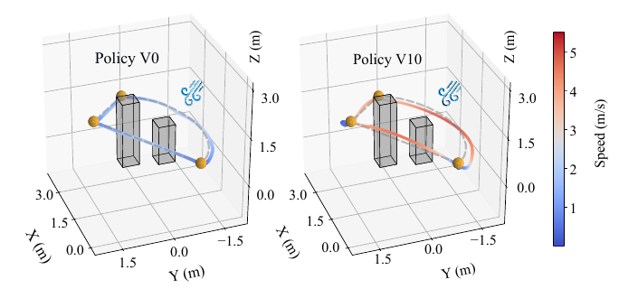
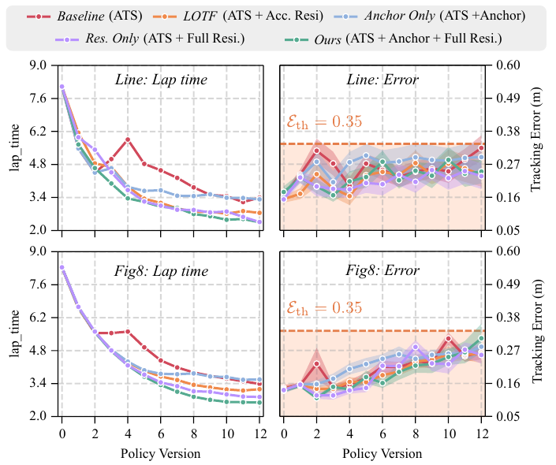
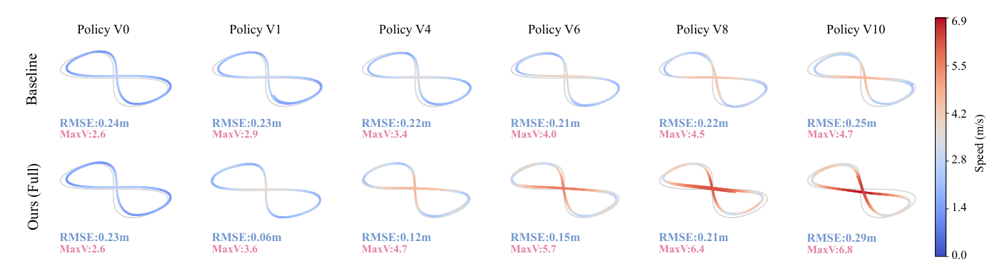

A drone starts with a slow, safe policy and teaches itself to fly fast while it flies. It learns what its physics model gets wrong, retrains the controller in a few seconds, and speeds up the reference trajectory until tracking error says stop. No precise system identification and no offline sim-to-real retraining.
2.0 → 7.3 m/speak speed on the line shuttle, same drone, same task
≈ 100 sof real flight time to get there (12 policy updates)
6 rad/sbody-rate command limit: the learned policy ends up saturating it
−42 %inspection mission time under fan wind (12 s → 7 s)

Paper Fig. 1Frames are sampled every 0.5 s, so sparse dots mean high speed. Top row: iteration 0 (≈ 2 m/s). Bottom row: iteration 12 (5.4–7.3 m/s).
§ III · Overview
One loop, four steps, ~9 s per turn
The drone keeps flying while a GPU workstation learns in the background. Every update takes about 9 s (100 epochs: ~3 s model fit + ~6 s policy) on an RTX 4090 with JAX. The letters match the paper's Fig. 2 panels.
learned from real flightmodel / simulationtime scaling (ATS)

Paper Fig. 2The full framework. Before the loop starts, a base policy is trained with plain BPTT on the nominal model; that takes seconds.
§ III-A · Model
Hybrid dynamics
Simple physics plus a small neural net that learns the leftover error: drag, delays, a heavier or damaged drone.
§ III-B · Policy
RASH-BPTT
Real-world Anchored Short-Horizon BPTT. Train the controller by differentiating through short simulated rollouts that start at real states.
§ III-C · Speed
Adaptive Temporal Scaling
One number α stretches or squeezes the reference in time. Gradient steps push it down until tracking error nears a limit.
§ III-A
Hybrid model: physics + learned residual
The nominal model is a point mass with a thrust direction. A neural net adds two corrections, shown in coral: an extra acceleration and an extra body rate.
CTBR = collective thrust and body rates. The policy outputs 4 numbers: thrust per unit mass \(c\) (m/s²) and three body rates. A tuned low-level controller turns these into motor commands. In the experiments \(c \le 25\ \text{m/s}^2\) and each rate is capped at \(\omega_{\max} = 6\ \text{rad/s}\).
State \(\mathbf{x} = (\mathbf{p}, \mathbf{v}, \mathbf{R})\): world-frame position, velocity, and body-to-world rotation. \(\mathbf{R}\mathbf{e}_3\) is the thrust axis. \((\cdot)^\wedge\) turns a 3-vector into a skew-symmetric matrix.
Why RK4 and not one Euler step: RK4's middle stages already rotate \(\mathbf{R}\) inside the step, so a position or velocity miss carries a gradient back to \(\class{cr}{\boldsymbol{\omega}_{\text{res}}}\). The rotation is updated with the exponential map, so \(\mathbf{R}\) stays a valid rotation.
One-step prediction error over a sliding window \(\mathcal{B}\) of recent real transitions. Rotation error is the angle between predicted and measured attitude: off by 10° gives \(0.175^2 \approx 0.031\). The spectral-norm term \(\|\mathbf{W}_l\|_\sigma\) caps how steep the net can be, which keeps gradients through long rollouts from blowing up.
§ III-B
RASH-BPTT: short rollouts anchored to reality
BPTT (backpropagation through time): run the differentiable simulator forward, then let autodiff send the reward gradient back through every step into the policy weights. A long rollout lets model errors pile up, and the policy learns to exploit them. Fix: start each rollout at a real measured state and stop after \(H\) steps.
real flight (measured)simulated rollout used for the gradientanchor = real state estimate
The gradient \(\nabla_\phi \mathcal{J}\) is exact: JAX differentiates through the RK4 steps and the residual net. Many anchored rollouts run in parallel on the GPU with jit + vmap.
Policy \(\pi_\phi\)
MLP, 2 hidden layers × 256 units; one forward pass ≈ 100 µs, run at 50 Hz
Example: \(\class{ct}{\alpha} = 0.5\) turns an 8 s lap into a 4 s lap on the same path. Every speed doubles and every acceleration goes ×4, because \(v \propto 1/\alpha\) and \(a \propto 1/\alpha^2\). Differential flatness gives the full reference state (attitude, rates) from these derivatives.
8.0 slap time
2.5peak speed, m/s
2.5peak accel., m/s²
Drag left to play ATS by hand. Toy figure-8, 5 m × 2 m, 8 s lap at α = 1. Not the paper's exact track.
ATS picks \(\class{ct}{\alpha}\) by gradient descent on a cost that rewards a small \(\class{ct}{\alpha}\) and adds a smooth penalty once predicted tracking error passes a threshold.
\(\Psi\) is a softplus barrier: ≈ 0 when error is below \(\mathcal{E}_{\text{th}}\), ≈ linear above it. Its slope \(\Psi'\) is a smooth on/off switch for the safety term. The ablation uses \(\mathcal{E}_{\text{th}} = 0.35\ \text{m}\).
Curve drawn with sharpness κ = 40 /m for illustration; the paper does not state κ.

Paper Fig. 3The cost landscape. The green dot is the smallest α (fastest lap) that still keeps error under the threshold. ATS settles there on its own.
The real flight can't be differentiated. So ATS asks a "what if" question with the hybrid model: if α had been slightly different on the last real rollout \(\{(\bar{\mathbf{x}}_k, \bar{\mathbf{u}}_k)\}\), how would the error have changed?
\(\mathbf{S}_k = d\hat{\mathbf{x}}_k / d\alpha\): how far the state at step \(k\) would move if α changed. It is pushed forward step by step with the model's Jacobians, all taken along the real trajectory, and it accounts for the policy reacting to the changed reference. \(\Pi\) clips α into its allowed range.
§ IV · Results
What happened in real flight
Setup: 192 g quadrotor (Agilicious platform), motion capture at 100 Hz, commands at 50 Hz from an off-board workstation.

Paper Fig. 5Commanded body rates. After ~30–40 s the raw commands keep hitting the 6 rad/s cap. The drone is now limited by its command interface, not by caution.
Lap time
Figure-8 (s)
Shuttle (s)
Rotor-thrust bound †
2.02
1.42
CTBR bound
2.24
1.49
Ours, real flight
2.60
2.30
Paper Table I. Bounds are offline, zero-delay trajectory optimizations with the same limits (c ≤ 25 m/s², 6 rad/s). † Not reachable through CTBR: needs body rates above 28 rad/s.
Figure-8: 2.60 s vs. 2.24 s best possible, so within 16 % of the interface limit. The shuttle gap is larger (2.30 vs. 1.49 s) because its hard direction reversals suffer more from delays and aerodynamics.

Paper Fig. 4Damage tests: clipped propeller tips and a 60 g weight (+31 % mass).

Paper Fig. 6Error jumps right after the hardware change, then drops after one residual update. ATS then speeds each damaged drone up to its own new limit.

Paper Fig. 7Inspection mission past three landmarks with a fan blowing. After ~2 min of learning: 12 s → 7 s (−42 %), with tracking error kept low.

Paper Fig. 8Ablation in simulation. Every variant gets ATS, so all stay under \(\mathcal{E}_{\text{th}} = 0.35\ \text{m}\). The difference is how fast each one gets.
What the ablation shows
Residual learning raises the speed ceiling. Lower model error leaves more room under the threshold, so ATS can shrink α further. The nominal-only baseline hits the threshold early and stalls.
The rotation residual matters at high speed. LOTF learns only an acceleration residual. Adding \(\boldsymbol{\omega}_{\text{res}}\) tracks better as speed rises.
Anchoring makes training stable. Rollouts that start from real states stay in the region the policy actually visits.
Full method = shortest lap on both tracks.

Paper Fig. 9Simulated 5 m/s wind. One residual update cuts error from 0.23 m to 0.06 m (V0 → V1). ATS spends that margin on speed: 2.6 → 6.8 m/s by V10. The baseline never gets past 4.7 m/s.
§ V · Discussion
Limits the authors name
The ceiling is the CTBR interface (6 rad/s), not the motors. Commanding single rotors could close the 2.24 s → 2.02 s gap, but sim-to-real gets harder.
ATS only changes timing. The path shape is fixed, so it can't reroute or avoid obstacles.
The residual net learns only from normal flight, so edge-of-envelope states stay poorly modeled.
It relies on motion capture. Onboard sensing at high speed adds noise and delay.